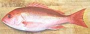
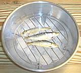
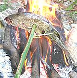

SAFARI
Users
- General & History
- Varieties of fish - with links to details of preparation and cooking (big page, lots of pictures)
- Fish Products - food items made from fish and fish eggs.
- Fish Anatomy
- Best Fish for:
- Buying & Storing Fish
- Cleaning, Filleting & Preparing Fish
- Making Fish Stock - for soups and stews.
- Cooking Methods
- Health & Nutrition - Omega 3, Mercury, Worms, etc.
- Links - To more information on fish.
General & History
Fish have been trapped for eating in lakes and rivers since paleolithic times and even sea fishing predates the dawn of history. Fish farming began in Egypt at least 4000 years ago with ponds of Tilapia.
Varieties of Fish
 Our Varieties of Fish page lists fish that are either of wide culinary interest or marketed in Southern California. It's a very large page with a lot of pictures so be patient if you have a slow connection. Most fish on that page will have a "Details and Cooking" link to a detail page specific to that fish.
If you want more fish, or more information about a particular fish,
Fishbase (F9) lists over 34,100 species of fish
under over 324,100 common names and with over 59,400 photos - but they
have no culinary information at all.
Buying Fish
The three keys to buying fish are Fresh, Fresh and Fresh. The advantages of buying whole fish are that you can be sure what kind of fish it is (deception is rampant, both deliberate and accidental) and judge freshness more easily. You can also use the head, bones fins and sometimes skins to make fish stock, important for many recipes.
- The eyes should be clear and not sunken. If the fish was previously frozen (most fish these days) the eyes may be a little sunken, but not badly, and should still be fairly clear.
- The flesh should spring back when poked.
- There should be no strong fishy smell. Very fresh fish have almost no smell, and smell becomes stronger the longer they've been dead.
- Shark, skate and ray will have a distinct ammonia smell if not fresh. Just a faint trace you can deal with but if it's more, pass.
- The gills should be bright red. If they are light color or grayish the fish is old. The brightness varies with fish variety and depending on if the fish has been frozen but should never be gray. Note that in some cases the blood runs to the lower gill of a fish on its side so the top one may be pale but the bottom one is bright red. This is OK. They should never be clogged and icky looking.
Of course, if you buy whole fish instead of fillets you'll have more work preparing them for cooking, but you'll also have the ingredients for fish stock for excellent fish soups and stews. Most fish markets will scale and clean the fish you have selected without charge.
Another reason to buy whole fish is that you know what you're paying for. "Substitution" is rampant in the fish business, and even in pricey sushi bars, especially for the more costly fish.
Commercially frozen fish can be very fresh because on modern fishing ships fish can be deep frozen immediately after being caught. Farmed fish is also often frozen immediately and without processing. Commercial freezing is done very quickly at very low temperatures so there is almost no damage to the flesh from growth of ice crystals. At fish markets these frozen fish are often put on ice and allowed to thaw slowly as they wait for a buyer.
Fish to be eaten raw as sushi or ceviche should have been commercially frozen to -4°F/-20°C (Japan) or -10°F/-24°C for 7 days (United States) which will kill all fish parasites and most bacteria. Preferably buy it still frozen. These temperatures are required for fish served in sushi bars in both countries - so your "fresh" toro is actually "previously frozen".
It's best to buy fish from a source that does a lot of volume. I buy mostly from markets serving a large Asian population because their standards of fresh are more demanding than at your average supermarket (I've even seen fish still flopping around on the ice in Asian markets). Volume tends to be very high at these markets. At one Philippine market in the San Fernando valley I counted 8 guys on the scale and clean line working as fast as they could.
Some mainstream supermarkets tend to use expiry dates at the ragged edge and apply "Special Today" stickers on the last day, so know your market and take care.
Keep frozen fish frozen until just before needed and use it within a couple months at most. Frozen fish still degrades in your home freezer compartment due to normal temperature fluctuations, particularly oily fish like mackerel, tuna and salmon. They will be rancid and inedible in just a few months.
Thawing Fish
Almost all sources recommend thawing meat, fish and poultry in the refrigerator - a method that takes almost forever and is impossible for those of us who start our meal planning as we start to cook. They all warn NEVER (emphasis their's) thaw at room temperature.
This advice is Total Bunk, originating from the FDA with no research to back it. Not only is it unpredictable (refrigerators vary) and risks cross contaminating ready-to-eat foods in the fridge, actual research has shown higher bacterial growth than when thawed in cold running water or just sitting on the counter at a cool room temperature. This applies to all frozen food, not just fish.
Even the hard core bacteriophobes at the USDA (U.S. Department of Agriculture) do not object to room temperature thawing in food processing facilities. Research supports that position.
The key to safe room temperature or cold water thawing to not let it sit beyond thawed. Fortunately these methods don't require you to start thawing much before need, but if you find you just aren't ready to cook yet when nearly thawed, wrap it in a watertight plastic bag and refrigerate until needed.
Storing fish
Fresh or thawed fish needs to be eaten as soon as possible, but sometimes we just can't eat it "right now". Properly done, you can store it in a good refrigerator for a day or even two, but otherwise you have to freeze it. Even if you have to refreeze fish that had been commercially frozen it'll still be fine if you follow the method below.
 The best way to store fresh or thawed fish overnight (some report good results for 2 days) is as shown in the photo.
The bowl has ice in the bottom and the fish is on a grate so all juices
fall into the bowl below. Cover the bowl with plastic wrap and refrigerate.
The grate shown is a wok steamer grate purchased from an Asian market.
Freezing Fish
The faster fish is frozen the less damage there will be to the flesh. If it freezes slowly, larger ice crystals will grow breaking up the cell walls.
- Prepare the fish for cooking. Cut it into the thinnest pieces suitable for the mode of cooking you will use. Keep parts in a bowl of ice water as you work.
- Make sure the fish is as near freezing as possible all the way through. Again, the bowl of ice water, or soak in the coldest part of your refrigerator for a couple of hours.
- Lay out a thin sheet of plastic film on a flat surface, such as a baking sheet and spread pieces of fish on it in a single layer, making sure there is good air circulation.
- Place in your freezer compartment and keep the door closed as much as possible until the fish is frozen through.
- Bag in plastic when thoroughly frozen. Seal the bag.
Cooking Fish
 The objective, when cooking fish by any means, is to cook it the minimum time that will cook it through. Frying fish can be an exception since the objective is to be crusty brown on the outside, but keeping the oil hot enough for thin pieces and not too hot for thick ones will get your crust without burning the outside or overcooking the fish.
Cooking Fish Whole - Why?
Cooking fish whole with head, tail, fins and skin in place will help keep the flesh moist and the flavor sealed in. Many urban people have a problem with looking what they're eating in the eye though, so you may need to dismantle the fish at least partially before serving.Servings:
Since I don't know how hungry you are and fish vary (particularly when whole), this table is only a general guide.| Preparation | Servings per Pound |
|---|---|
| Whole Fish (guts, scales and gills removed) |
1 - 2 |
| Pan Dressed (head & fins removed) |
2 - 3 |
| Steaks (cross cuts) | 2 - 3 |
| Fillets (boneless) | 3 - 4 |
Baking Fish:
Baking is an excellent method particularly for whole fish. Essentially, the fish is steamed in its own juices and whatever seasonings are added.Baking Time Chart
Baked Fish
Stuffed Baked Whole Mackerel
Broiling:
Broiling is a fish cooking method that's fast, tasty, easy to clean up after and keeps the stove top clear for other uses. The downside is the amount of energy used and heating up the kitchen.Broiling Method
Deep Frying:
For deep frying you need enough oil to submerge or nearly submerge the pieces of fish. The fish pieces (or whole small fish) are usually covered with some sort of batter in Western cooking, but may have none or just a light powdering of starch for Asian recipes.Deep Fry Method.
Pan Frying:
Pan frying requires only enough oil to keep the fish from sticking to the pan. Some fish pan fry fine with no coating but many require at least a light powdering of starch to keep from sticking, particularly if the skin is on, and some fish will fall apart if not coated.Pan Fry Method.
Grilling:
While probably the most disaster prone method for cooking fish, grilling has a fatal attraction for men. Here are some hints on how to keep it together.Grilling Method.
Poaching:
Poaching, cooking submerged in water just below a simmer, is an excellent way to cook any fish, particularly those of delicate flavor.Method for Poaching Fish
Steaming:
Steaming is a popular method of cooking fish in Asia where home ovens were unknown until just recently and are still rare.Method for Steaming Fish
Health & Nutrition
Fish are naturally very healthy and nutritious. In particular fish oils are the most effective source of Omega 3 fatty acids, thought by current medical knowledge to be effective against heart disease and clogged arteries. Some are, however, reluctant to recommend eating fish because of the concerns listed below.
Mercury
In the 1960s hundreds of people in Japan were disabled and/or died from nervous system disorders acquired from nearly daily consumption of fish heavily contaminated with mercury. Mercury content was generally between 9 and 24 ppm (parts per million) with some as high as 40 ppm.
The U.S. FDA (Food and Drug Administration) set a maximum mercury content of 1 ppm for fish consumed in the United States, but admitted that level was purely a guess, and a conservative one. There was no reliable data on mercury exposure much lower than that experienced in Japan. This safety margin is very conservative, considering Americans don't eat fish every day. Certain large predatory fish (sharks, swordfish, largest tuna) can reach or exceed this level but most fish are far lower.
The FDA could not determine the level that might affect the nervous system of a developing fetus, but issued strong warnings for pregnant women to avoid certain types of fish. This lack of data has resulted in some studies.
A long term study by the University of Rochester and the Ministry of Health in the Seychelles islands has reported in. Pregnant women in the study ate an average of 10 times the amount of fish eaten by American women (there's not much else to eat there). Their children were well over 15 years old when the study concluded. Sponsors of the study were "shocked" (their word) to find no adverse affects whatever. Mercury levels for ocean fish are pretty uniform worldwide (except for a few spots with heavy industrial polution), so these results have broad application.
The FDA maintains a table of tested mercury content for a wide range of commercially important fish and shellfish (F2). Note that this table is for wild caught fish - farmed fish are unlikely to have a high mercury content due to type of feeding and short life. They have finally partially remedied the tilefish problem by separating Gulf of Mexico tilefish from low mercury Atlantic and Pacific tilefish.
Unfortunately, a whole industry has sprung up based on panicking people about "mercury in fish". While actual data supports that fish is safe to eat from a mercury standpoint, certainly in the amounts most Americans consume, there are now whole businesses and careers that thrive on the "mercury danger". How could certain "health product" promoters sell their expensive krill oil if you realized you could just go out an buy a mackerel?
PETA (People for the Ethical Treatment of Animals) and other advocacy groups continue to present mercury proclamations, often tricked out with highly questionable or deceptively presented "scientific" data, to promote their own objectives - and their objectives may not be at all related to your health. One recent study by the Biodiversity Research Institute has been declared "Fraudulent" and scientifically unsupported by the National Fisheries Institute.
Given that the CDC (Centers for Disease Control and Prevention) has not registered a single case of mercury poisoning from fish, recommendations from the FDA and EPA (F10), the Rochester Study (F3) and general demographics of fish eating populations, it seems pretty conclusive that fish are safe to eat from a mercury standpoint. As of 2014, the FDA and EPA recommend pregnant women eat more fish.
Even more alarmist is GotMercury.org (F5) but their mercury panic campaign is actually a stealth cover for their core objective, which is stopping long line fishing - they, like PETA, are an "ends justify the means" group, and I simply don't think any organization dishonest about their data and objectives deserves credence.
Parasitic Worms in Sushi
Anisakid Nematodes
as a problem in sushi, particularly salmon sushi, have been widely discussed, sometimes in an alarmist and exaggerated way. In one case a 1-1/2 inch worm was reported as 10 inches long. Demographic information from populations that eat a lot of raw fish (Japan, Holland, Southern California) indicate it is a rare condition, but real, and can cause a lot of pain, often misdiagnosed as appendicitis. Even in these cases worms do not find humans a suitable host and die within 7 to 10 days. Most reported cases are from people who made sushi at home from wild caught salmon (farmed salmon is not likely to be infected).Tapeworms
are a problem found in fresh water fish and salmon which live part of their life cycle in fresh water. Tapeworms can infest the human digestive tract for several years but are relatively easy to remove with medication if properly diagnosed. Eating fresh water fish raw is not recommended for this and other reasons.Japan's National Health Institute recommends freezing fish that will be used raw to -4°F/-20°C for several hours but this is lower than most home refrigerator freezer compartments will go, so commercially frozen fish is recommended. The U.S. FDA is more strict, recommending 7 days at -4°F/-20°C or 15 hours at -31°F/-35°C. Cooking fish to an internal temperature of 140°F/60°C will kill all parasitic worms. Most fish cooking methods easily reach this temperature. See information from the California Department of Fish and Wildlife (F6) for more details.
Ciguatera Poisoning
Large predatory fish in tropical reef areas can be highly toxic. Eating them results in a range of frightening symptoms caused by damage to the nervous system. Treatment is difficult. Barracuda is the most common source of this poison but red snapper, grouper and others can be sources.
A single-celled protozoan, Gambiendiscus toxicus, adheres to algae growing on coral reefs. Small fish that eat the algae become contaminated with ciguatoxin from these protozoans. Larger fish eat the small fish and are in turn eaten by large predators with the toxin becoming more concentrated at each step up the food chain.
Effective testing is seldom available for this toxin so fish cannot easily be certified safe if from a suspect region. This poisoning does not occur in non-tropical areas or far away from the reef environment. Barracuda taken off the U.S. Pacific coast are free of the toxin but Florida barracuda should not be eaten.
Histamine Poisoning
Some fish, particularly family Scombridae (Mackerel and Tuna), if not properly handled, are subject to bacterial action resulting in production of histamines. An overload of histamines causes tingling of the lips and mouth, skin rashes, vomiting and other symptoms that may last for as long as 12 hours. In most cases it is not dangerous, but in the case of persons with allergy to bee and wasp stings it can be serious. Such persons should be careful about fish they eat and should carry anti-histamine tablets.
Other Health Problems
Some fish are just plain toxic and consuming them will kill you dead. Most famous is the puffer fish known as Fugu in Japan where it is a highly prized and hideously expensive delicacy. Fugu chefs are trained, licensed and regulated because one mistake made in preparing the fish can kill customers, and sometimes does.
As with Ciguatera Poisoning, the Fugu accumulate the toxins from their diet. It is easy to farm raise Fugu that is not toxic at all, but the Japanese have shown no interest in Fugu that does not carry the risk of death.
Fish from particular locations at particular times can be contaminated with bacteria or pollutants and be unsafe to eat. "Red tides" are particularly noted for this. Check the local government's Web site or with local fish and game authorities when catching fish in areas you are not familiar with.
Links
- F2 - Mercury Table - U.S. Food and Drug Administration. - Mercury Levels in Commercial Fish and Shellfish.
- F3 - Seychelles Mercury Study - University of Rochester.- Commercial Fish: Eat Up, Despite Low Levels of Mercury.
- F4 - Your Fish is on Drugs - Dr. Mercola.
- F5 - Mercury in Sushi - GotMercury.org.
- F6 - Parasites in California Fish - California Department of Fish and Wildlife.
- F7 - Poisoning from Fish - New York Times.
- F9 - Searchable fish list - Fishbase.
- F10 - EPA / FDA - Consumption Advice: Joint Federal Advisory for Mercury in Fish